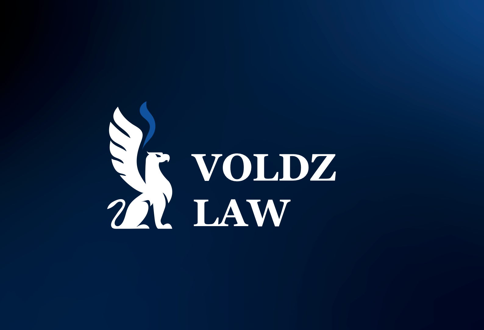
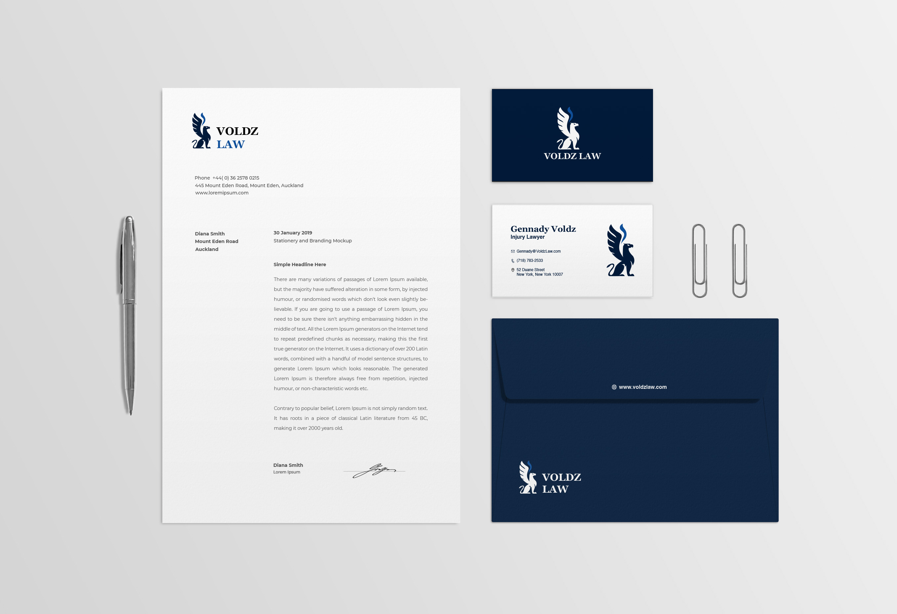
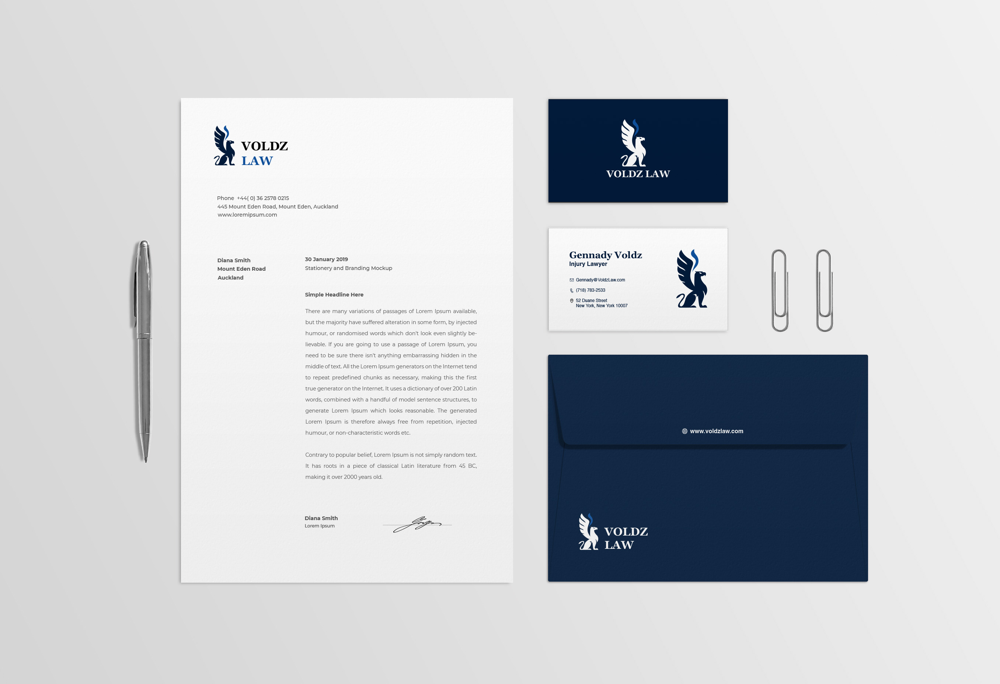

Brand Identity — Voldz Law P.C.
Executed a comprehensive rebranding initiative for Voldz Law P.C., featuring a griffon logo that symbolizes strength, courage, and protection—core qualities that reflect the firm's commitment to safeguarding clients' rights. The minimalistic design, incorporating clean lines and the color blue, conveys professionalism, trust, and elegance. This cohesive visual identity extends across various brand collaterals, including business cards and posters, ensuring a consistent and impactful presence.


 



I'm Sejal Sanghvi, a Visual Designer and Fine Artist, passionate about creating pixel-perfect designs across brand identities, apps, prototyping, coding, and product management. Whether it's through design, code, or a blend of both, I'm committed to creating user-centric digital solutions.
EMAIL | LINKEDIN | INSTAGRAM
EMAIL | LINKEDIN | INSTAGRAM